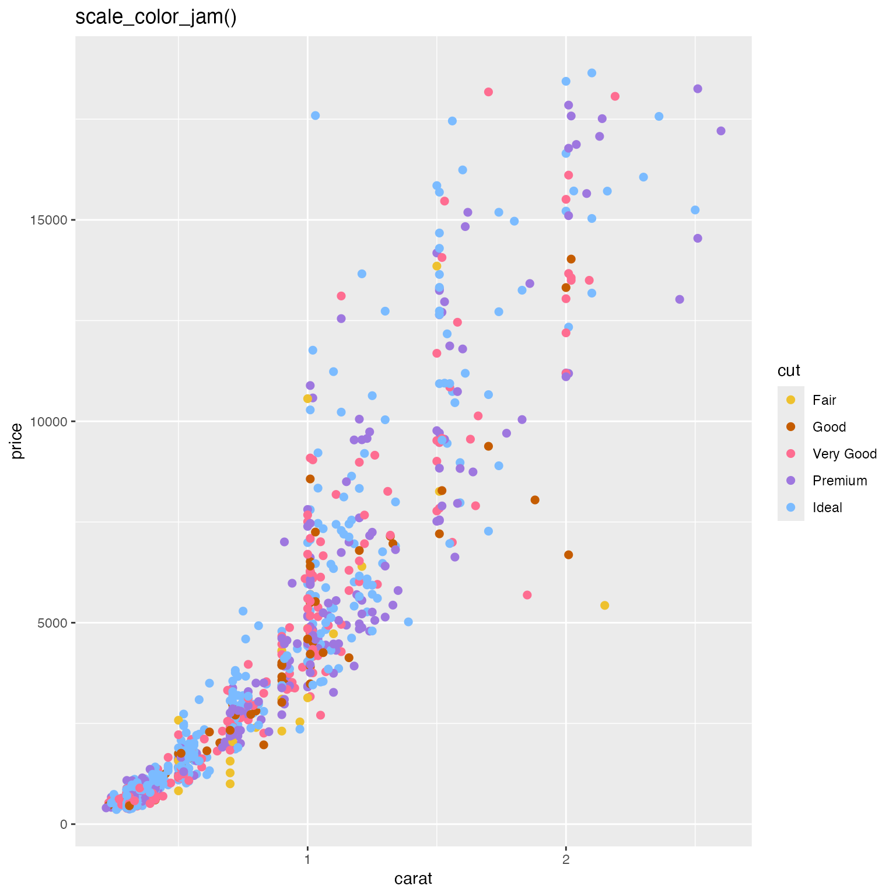
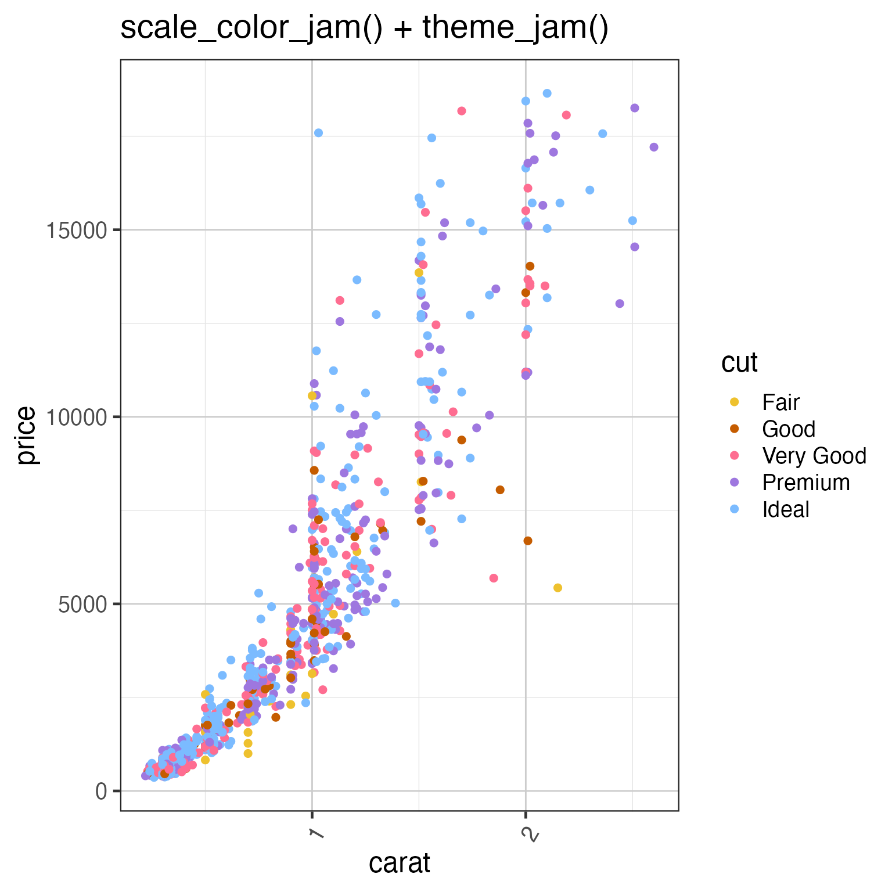

Jam default theme for ggplot2
theme_jam(
theme_default = ggplot2::theme_bw,
base_size = 18,
grid.major.size = 0.5,
grid.minor.size = 0.25,
strip.background.colour = "grey30",
strip.background.fill = "lightgoldenrod1",
strip.text.size = ggplot2::rel(0.8),
panel.grid.major.colour = "grey80",
panel.grid.minor.colour = "grey90",
panel.background = ggplot2::element_rect(fill = "white", colour = NA),
panel.border = ggplot2::element_rect(fill = NA, colour = "grey15"),
axis.text.x.angle = 60,
blankGrid = FALSE,
blankXgrid = FALSE,
blankYgrid = FALSE,
resetTheme = TRUE,
verbose = FALSE,
...
)function representing a ggplot2 theme.
numeric default font point size, used for scaling the
overall text sizes larger or smaller.
numeric the line width for the major
and minor grid lines, respectively. Set to 0 to suppress either.
character
color for the border and strip background itself when ggplot2 is
using a faceted layout.
numeric or relative class ggplot2::rel() to
define direct or relative text font size, respectively.
character
colors for the major and minor grid lines, respectively.
element_rect or NULL
indicating the type of background or border
to draw around each plot panel. When set to NULL it is
set to ggplot2::element_blank() which displays nothing.
numeric degrees to rotate the x-axis
labels, apparently starts at 0 (horizontal) and goes
counter-clockwise (to the left.)
logical indicating whether
to have a blank grid for everything, major, or minor axis lines,
respectively. Intended to make it fast and easy to remove all
gridlines.
logical whether to call the function theme_default
which essentially resets (replaces) all previous settings with
those defined in the theme function. If FALSE then only the
specific settings defined in this function will be applied.
logical indicating whether to print verbose output.
additional arguments are passed to ggplot2::theme() in
order to allow custom settings beyond what this function provides.
This function applies some default theme settings to ggplot2, mainly taking away the default grey newspaper background color, also rotates the x-axis label text to 60 degrees, to accomodate longer labels without overlaps.
Other colorjam ggplot2:
jam_pal(),
scale_color_jam(),
scale_fill_jam()
if (jamba::check_pkg_installed("ggplot2")) {
dsamp <- ggplot2::diamonds[sample(nrow(ggplot2::diamonds), 1000),];
d <- ggplot2::ggplot(dsamp,
ggplot2::aes(carat, price)) +
ggplot2::geom_point(
ggplot2::aes(colour=cut),
size=2);
print(d + scale_color_jam() + ggplot2::ggtitle("scale_color_jam()"));
print(d + scale_color_jam() + theme_jam() + ggplot2::ggtitle("scale_color_jam() + theme_jam()"));
}

